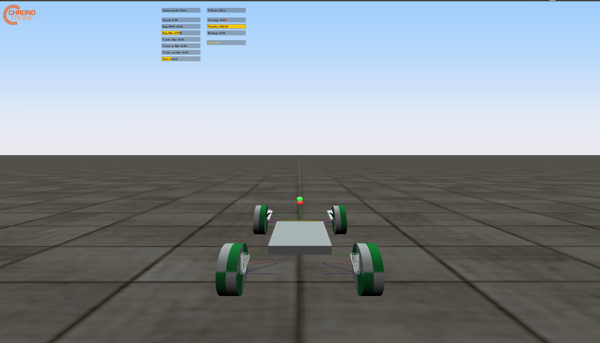
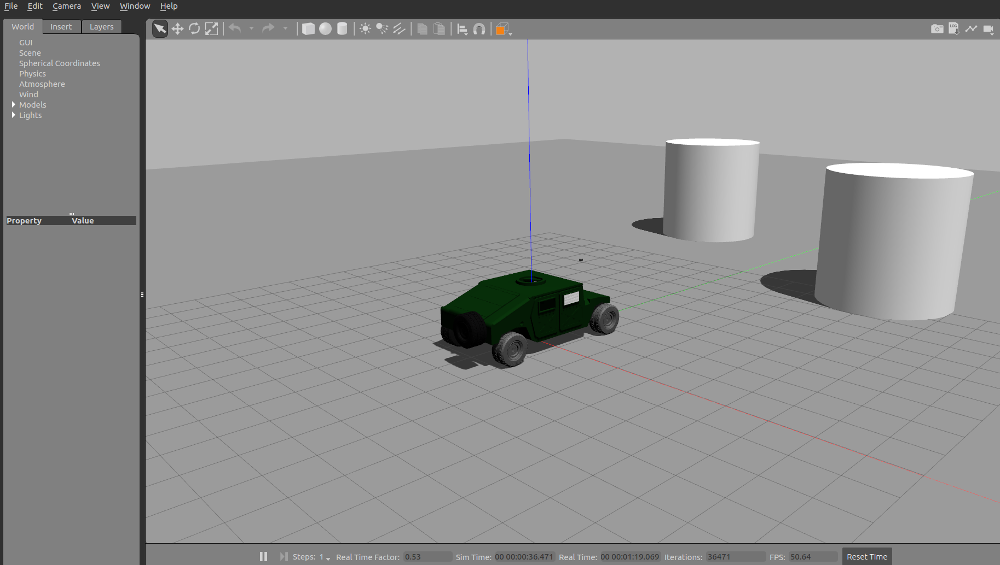
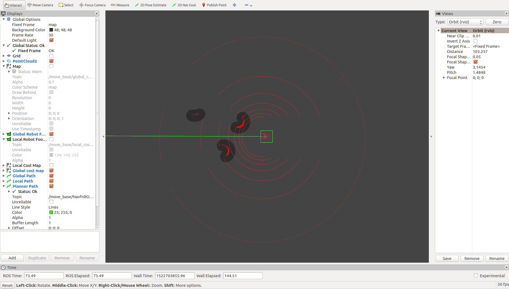

demoD
vehicledescription, rosbase_planner and chrono
A demo showing a completely integrated, end-to-end setup with a moving vehicle in Gazebo/Chrono that uses a trajectory planned by ros_base_planner.
status = working
To Run
roslaunch system demoD.launchExpected Output
Gazebo and Chrono would open with the vehicle and Rviz will pop up showing LIDAR scan data. Chrono simulation start takes a while.
| Case | Description |
|---|---|
system/rosbaseplanner/flags/goal_known = false | User can click on publish goal button in Rviz and select a goal point within the gloabl cost map area. The planner would plan a path from start to goal and display it. The vehicle in chrono should start moving. |
system/rosbaseplanner/flags/goal_known = true | Planner would pick the goal coordinates from the case file. The trajectory would be shown on Rviz and the vehicle in Gazebo and Chrono should start moving. |
Once, the trajectory is published on Rviz, ros parameter /system/ros_base_planner/initialized will be set to true
Output windows
  
Note
- Unless there is a path displayed on Rviz, Chrono will not start. Chrono waits for planner to get initialized, that means, the planner has successfully published a global plan at least once.
- Presently, at startup, Chrono vehicles spawns at z > 0, first it lands on the ground and then starts moving. This process takes a while.